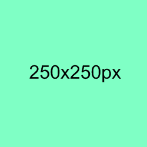

CSS盒模型本质上是一个盒子,封装周围的HTML元素,它包括:外边距,边框,内部填充和实际内容
这里是盒子的实际内容,有25px的外边距,25px的内边距,25px的绿色边框.
下面图片的宽度为250px宽,本区域内容文字也为250px宽.
定义一个点线边框.
定义一个虚线边框.
定义一个实线边框.
定义两个边框,两个边框的宽度和border-width有关.
定义3D沟槽边框,效果取决于边框的颜色值.
定义一个3D嵌入边框,效果取决于边框的颜色值.
定义3D脊边框,效果取决于边框的颜色值.
定义3D突出边框,效果取决于边框的颜色值.